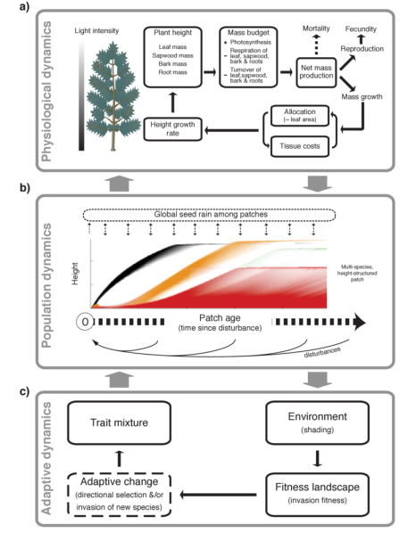
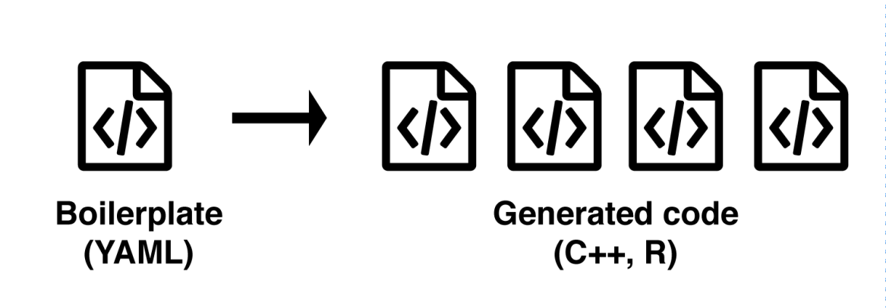
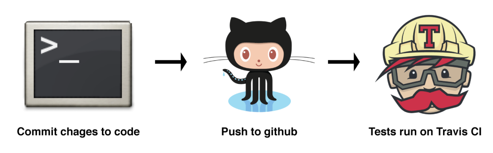

Key technologies used to build the plant package
Originally published on the Methods in Ecology and Evolution Methods blog on 23 February 2016, by Rich FitzJohn and Daniel Falster, and reposted here in the Overstorey notebook. It accompanies the package’s methods paper, Falster et al., doi:10.1111/2041-210X.12525.
Our paper in Methods in Ecology and Evolution describes a new software package, plant. plant is an individual-based simulation model that simulates the growth of individual trees, stands of competing plants, or entire metacommunities under a disturbance regime, using common physiological rules and trait-based functional trade-offs to capture differences among species.
Non-linear processes and thousands of plants
Since the development of gap models in the 1970s (e.g. Botkin 1972), researchers have been using computer simulations to investigate how elements of plant biology interact with competition and disturbance regimes to influence vegetation demography, structure and diversity. Simulating the competitive interactions among many thousands of plants, however, is no easy task.
Despite widespread recognition of the importance of key non-linear processes — such as size-structured competition, disturbance, and trait-based trade-offs — for vegetation dynamics, relatively few researchers have been brave (or daft) enough to try and incorporate such processes into their models. The situation is most extreme in theoretical ecology, where much contemporary theory (e.g. coexistence theory, neutral theory) is still built around completely unstructured populations.
Features of plant

plant package.The plant package attempts to change that by providing an extensible, open source framework for studying trait-, size- and patch-structured dynamics. One thing that makes the plant model significant is the focus on traits. plant is one of several attempts seeking to integrate current understanding about trait based trade-offs into a model of individual plant function (see also Moorcroft et al. 2001, Sakschewski et al. 2015).
A second feature that makes the plant software significant is that it is perhaps the first example where a computationally intensive model has been packaged up in a way that enables widespread usage, makes the model more usable and doesn’t sacrifice speed.
In this post we will describe the key technologies used to build the plant software.
Overcoming the speed/generality trade-off
R has become a widely used language in ecology and evolution, but it’s not ideal for building individual based simulations, due to its relatively low speed. The solution to this has traditionally been to write simulations in a lower-level compiled language (such as C, C++ or Java), have the simulation write output to files, and analyse those with R or a higher-level language (indeed that is the direction originally taken with this model). This traditional approach leads to a strong speed/flexibility trade-off. This trade-off arises because of:
- the need to write code to generate and parse the output files
- the need to include options for parsing all sorts of arguments in your C++ code
- the need to regularly recompile the C++ code whenever you want to add an option
- the inability to exploit R’s built-in functions (e.g. for probability distributions or integration, for non-time sensitive elements of the code)
Overall, having separate code for running the model and analysing model output greatly reduces flexibility in interacting with the model.
In plant, we wanted the best of both worlds – a simulation that would run at the speed of a compiled language but would allow us to interact with every part of the model. We wanted to be able to simulate our metacommunity of many species with 1000’s of plants and then drill down and inspect the physiological details of any individual plant. At the same time, we wanted the machinery to be flexible enough to allow us to swap out the low-level physiological model of the plants used while keeping the higher level behaviour the same.
We implemented the core of the model in C++, because code written in C++ can be much faster than code written in R. In our C++ code, we have plants that are grouped together into species, which exist in patches. They interact with a common light environment, and the whole system is controlled by a rather large set of parameters. Exposing these to R is a challenge because this modelling style relies on a fundamentally different approach to dealing with exposing data to R (in this style of C++ objects modify themselves, whereas in R objects are generally immutable with function calls creating new objects).
To bridge this divide we combined two new technologies in R; Rcpp and R6 classes with a new package of our own making, RcppR6. This allows us to export a “pointer” to our C++ objects to R, and interact with it using the same set of methods that are available on the C++ side. As these objects contain other objects (species contain plants, etc) we had to create interfaces for all of our objects, which we did using a code generation approach. We first describe the interface for each object type we want to interact with. For example, here is the interface for our basic “plant” type. The RcppR6 package then generates a lot of boilerplate code required to export the objects to R and back again (boilerplate are sections of code that have to be included in many places with little or no alteration).

RcppR6 package reduces the amount of interface code you need to write when linking C++ with R.We used a “generic programming” approach to allow for different physiologies; plants provide particular methods (such as reporting their height, growth rate, etc) and they can be used with any of the higher level functions (such as the SCM algorithm, or tools to grow plants to a different size). For example, this file implements a function to compute the whole plant light compensation point for any given plant type T. The C++ compiler establishes that each plant type that the function is used with can be used and generates appropriate code for each.
On the R side, we use R’s simple “S3” generic programming system to dispatch to the appropriate compiled function based on the type of the plant used. We think this mix of compile-time polymorphism and run-time polymorphism could enable efficient models and expressive bindings from dynamic languages.
Overall our approach allowed us to have both the expressiveness and interactivity of a dynamic language with the speed of C++. When running a simulation almost all the code runs at compiled speed, with R (which has a reputation for being slow) idle. But when the time comes to analyse our work with the outputs of the model, we can directly access any part of the simulation. We exploit this ability to interact with the model at any level in the vignettes for the package.
You can see some code using the plant package, in Appendix S3 of our paper.
Version control facilitates seamless collaboration
Increasingly, scientists are recognising the virtues of serious version control. We use git and, as we were early adopters, the entire history of development for plant has been tracked under version control. Alongside git, we used the code-sharing website GitHub to host our git repository. GitHub facilitates seamless collaboration by:
- providing a nice interface for seeing who changed what and when
- keeping older versions of the code
- allowing users (including ourselves) to report potential issues
- allowing others to clone the package and make changes
This track-record of what changed when was invaluable to us as we tracked down bugs and regressions and for working on code collaboratively.
Regular testing saves time in the long run
Models as large as this require a lot of testing to be sure that they are correct. Until recently, this testing process tended to be manual. As researchers develop models they will usually test them extensively, but these tests generally do not get stored for future use.
We made use of the testthat package to run a large set of automated tests (1307 at last count) covering all aspects of the model from validating inputs to the behaviour of the model in known pathological parts of parameter space. We combine this test suite with Travis CI — an automated testing service — to ensure that the tests are run every time someone makes a change to the code (and we all get an email if someone breaks it).

This test-driven-development approach has allowed us to swap out large parts of the package as we developed it and changed our minds about direction. We can run any changes through the test suite, so we can be reasonably sure we haven’t broken any previous behaviour. While testing is not a panacea it allowed us to be much more confident than we would otherwise have been in making changes to the model.
We strongly encourage other groups writing simulation models to consider testing from the outset as we believe it saves time in the long run.
R packages: easy installation and distribution
Using R brings many benefits beyond ease of analysis. Specifically, there are well established processes for installing packages, making it easy to deploy software across diverse platforms. While many packages are deployed via R’s core packaging system CRAN, packages can also be directly installed from GitHub using the handy devtools package.
Installing plant should be as easy as running these lines of code:
install.packages("devtools")
devtools::install_github("traitecoevo/plant", dependencies = TRUE)(unfortunately we are waiting on updates to the R/Windows compiler toolchain for this to work on Windows.)
From then on, all you need to do is run library(plant) and you’re ready to use our model. Running library(help = plant) from within R will display all the help files for the project.
Conclusion
As simulation models become more common place in ecology, we modellers should move beyond implementing one-off models that work locally but use bespoke interfaces and arbitrary command line arguments to run. We hope that plant, with its extensible interface and combination of compiled-language speed and dynamic language flexibility, will be a useful starting point for further research in this space.
To find out more about plant, read Plant: A package for modelling forest trait ecology & evolution by Falster et al. (2015). This article was part of the British Ecological Society’s Cross-Journal Special Feature, Demography Beyond the Population. You can also read the original post on the MEE Methods blog.